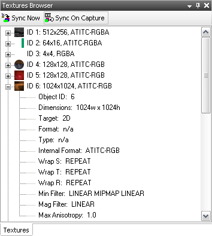

The Textures Browser lists the textures that have been captured from the connected device.

Basic usage:
• Expand a texture's tree node to view details about the texture.
• Selecting a texture will cause the Scrubber's emulator view to highlight all meshes using that texture in green.
• Selecting a texture will also cause it to be displayed in the Mipmaps Viewer.
• When a texture is overridden (see Mipmaps Viewer), the Textures Browser will indicate so with an icon [] next to the texture. Clicking on that icon will revert to the originally captured texture.
Toolbar options:
Expands or collapses all items in the texture list.

Immediately clears and redownloads all textures from the connected device.
When toggled on, textures will be resynchronized upon all subsequent Scrubber frame captures.
• Assuming textures have been synchronized at least once, switching this option off can save time for subsequent captures, provided it is known that the connected application has not altered any texture data.